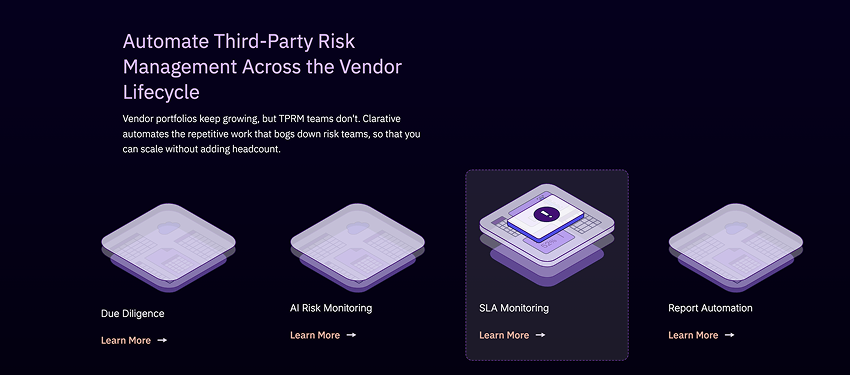
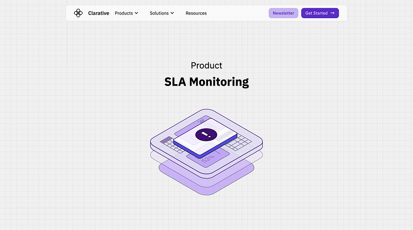
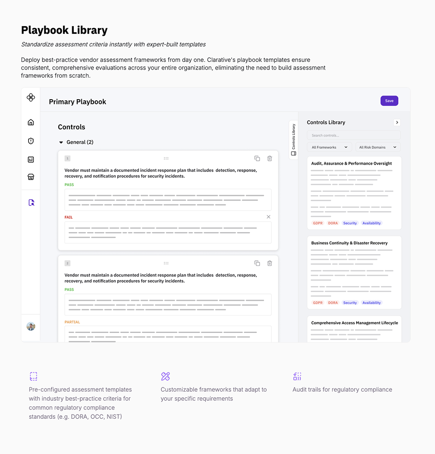
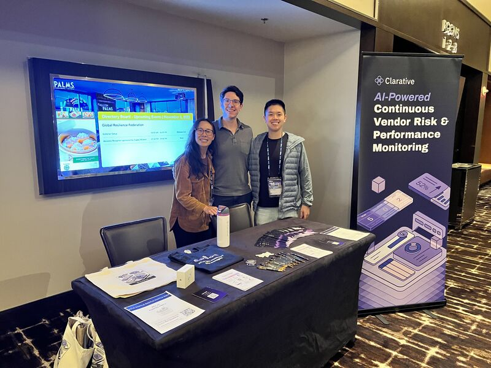
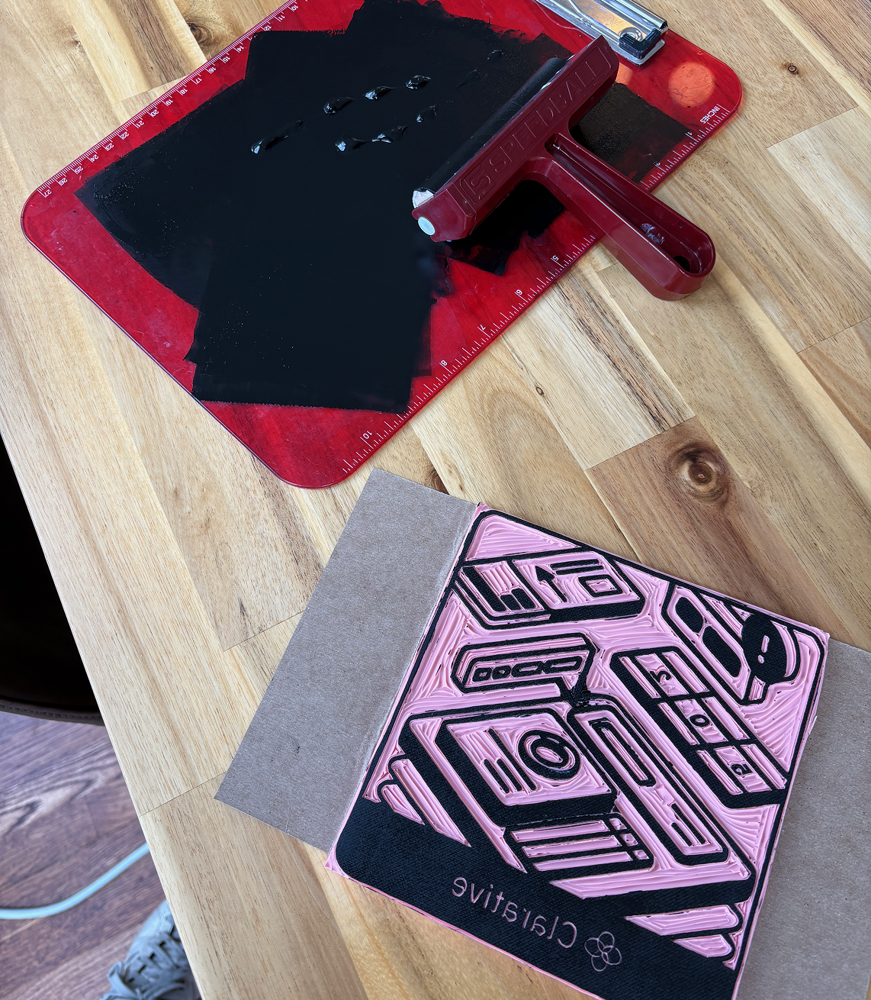
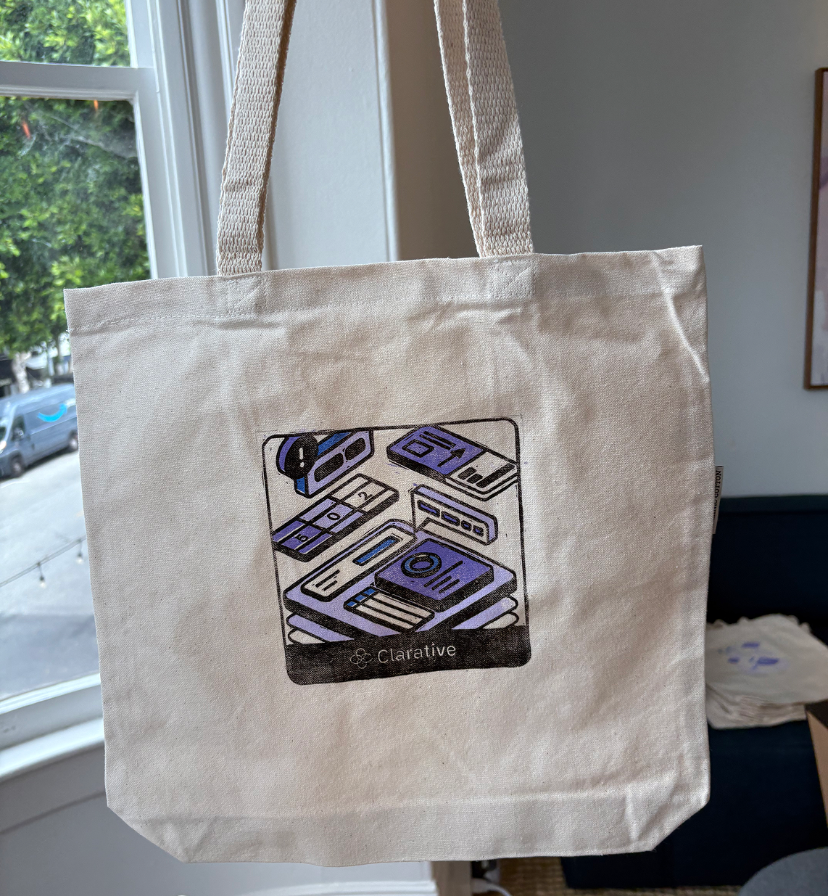

As the first designer at Clarative, I designed and built the public-facing marketing site end-to-end in Webflow. The goal was to translate a technically complex product into something that felt immediately legible with clear value props. It was also important to me NOT to look like every other B2B SaaS and NOT to look like a startup, which meant I created all illustrations myself without AI to bring a clearly personalized human element.



We attended industry conferences to meet TPRMs where they already gather. I designed the full suite of conference materials — booth graphics, printed leave-behinds, slide decks, and one-pagers. I also attended the conferences myself to improve our conference design planning (and to sneak in some user interviews).


Hand-carved linoleum printmaking blocks for tote bags
